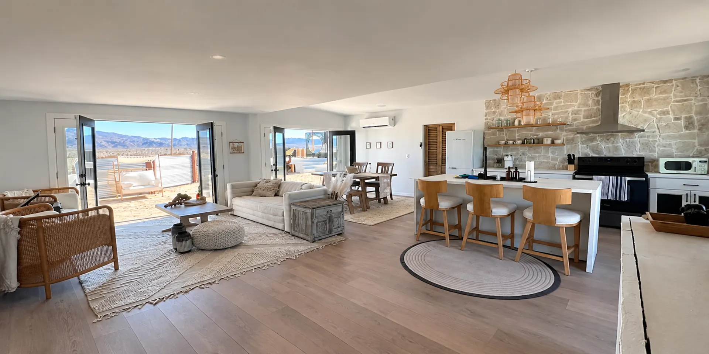
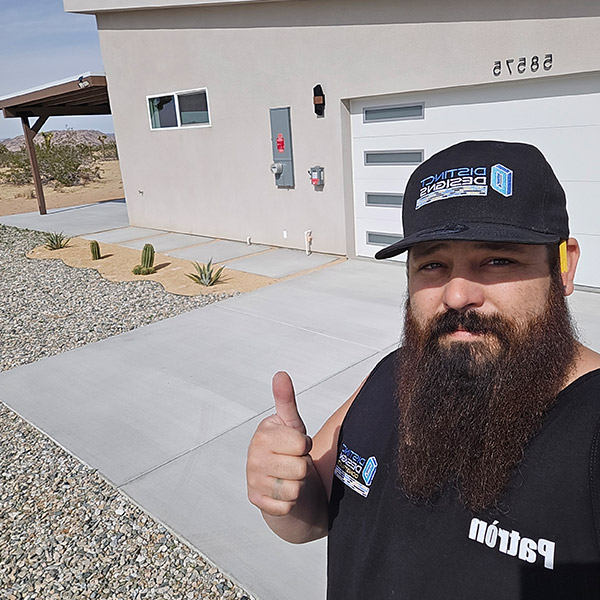
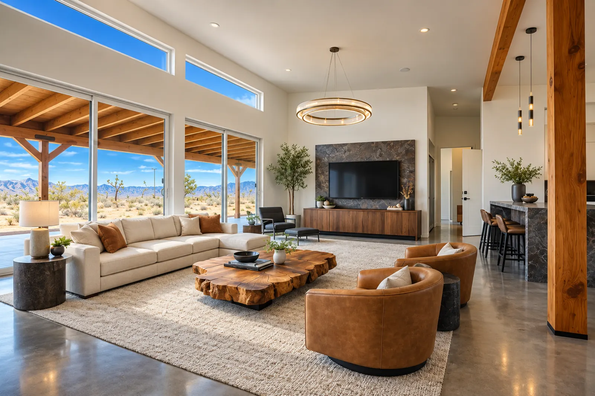

Joshua Tree, CA · High Desert & Coachella Valley
The High Desert's Luxury Custom Home Builder
Distinct Designs Construction specializes exclusively in luxury custom homes and high-end renovations across the high desert and greater Southern California.
We don't build homes for everyone. We build signature homes for clients who refuse to settle.
Custom luxury home construction
Ground-up homes from $870K to $5M+, with one crew and a budget matched before groundbreaking.
View custom homesWhole-home renovations
Designer kitchens, spa bathrooms, and full transformations, priced as one number before demo day.
View remodelsCustom ADU construction
Guest suites built to the same standard as our luxury homes, with permitting handled.
View ADUsAlso: designer kitchens and bathrooms, and full-service architecture and engineering coordination. See every service.
Free guide
Get your free guide. Know before you hire.
Two homes can be the same size, yet one costs $900K and the other $2.5M. Most builders never explain why.
Owner
Nicholas Aguilar
The High Desert's luxury custom home builder
Your home is one of the most significant investments you will ever make. Not just financially, but in the life you are building around it.
Distinct Designs Construction specializes exclusively in luxury custom homes and high-end renovations across the high desert and greater Southern California.
We don't build homes for everyone. We build signature homes for clients who refuse to settle.
High quality custom luxury home construction · Whole-home renovations · Designer kitchens and bathrooms · Custom ADU construction · Architecture and engineering coordination

Signature builds and remodels
Every project is handled by our in-house team, from first consultation to final walkthrough.
What our clients say
“Nick and team went above and beyond! Great attention to detail and excellent communication.”
Jessica & Laura Myers
“Nick and everyone on his team are just simply the best. He gave us a magical bathroom and also helped out with new wood-trimmed windows and doors. Everyone was super kind, super fast, and really skilled. Nick's passion for his job shows, and it made the process really personal and fun. So happy with the results!”
Victoria Lynn Carroll
“Nick and his crew were very professional, always on time to the job site, respectable of the house, and cleaned up after themselves. Nick built a covered patio for me. It came out amazing and fair price too. I highly recommend Nick for any general construction.”
Troy Gatchell
“Nick and his crew were by far the best contractors I have worked with out here in Yucca Valley/Landers.”
Katie Lee
Frequently asked questions
We specialize exclusively in high-end custom construction and luxury renovations across the high desert and greater Southern California region. Our services include Custom Luxury Home Construction, Whole-Home Renovations and Transformations, Designer Kitchen Renovations and Remodels, Luxury Bathroom Renovations, Remodels and Additions, Custom ADU and Guest Suite Construction, and Full-Service Architecture and Engineering Coordination. Every project is handled by our dedicated in-house team from the first consultation to the final walkthrough: no rotating subcontractors, no compromises.
Yes. Distinct Designs Construction is a fully licensed, bonded, and insured contractor. License #1039394. Your investment and your property are fully protected from day one.
Before a single shovel breaks ground we conduct a thorough pre-construction design-to-budget matching process. Every material selection, design detail, and architectural decision is carefully evaluated and priced upfront so you have a clear and accurate picture of your total investment from day one. No mid-build surprises, no forced compromises, and no uncomfortable conversations about costs that should have been addressed from the start. If an element of the design needs to be reconsidered we identify it early and present alternatives that meet the same standard, before you have committed to it.
Communication is one of our most important commitments to every client. You receive real-time photo updates through our client portal powered by CompanyCam plus detailed bi-weekly field reports so you always know exactly where your project stands. When you reach out you hear back the same day, directly from leadership or your dedicated project manager, not a receptionist or voicemail box. Text, email, or phone call: we are always accessible. You will never feel out of the loop on your own project.
Absolutely. We have longstanding relationships with top architects, designers, and realtors throughout the high desert and greater Southern California region. We are experienced at bringing precise design visions to life without ever compromising the intent, and our trusted partners regularly refer their most discerning clients to us because they know the work will be executed with the same level of care and precision they put into their own. When your architect, designer, and builder operate in true partnership the vision actually gets built exactly as intended.
Before we break ground we invest significant time in the pre-construction phase because we believe the work done before construction begins is what separates a smooth build from a stressful one. This includes a thorough consultation to understand your vision, lifestyle, and budget, complete design-to-budget matching to ensure everything is aligned before any commitments are made, full coordination with your architect or designer, permitting and approval management, and a detailed project timeline so you know exactly what to expect and when. You move forward with complete confidence knowing every dollar has been accounted for and every detail has been planned with purpose.
Every project is unique and timelines vary based on scope, size, and complexity. A full custom home build typically ranges from 10 to 18 months depending on design, permitting, and finish selections. A full home remodel can range from 2 to 6 months. What sets us apart is not just the timeline we give you. It is how we protect it. Our pre-construction process, dedicated crew, and proactive communication system are all specifically designed to prevent the delays that derail most builds. You will always know where your project stands and why.
Yes and we do it regularly. Our client portal provides real-time photo updates, our bi-weekly field reports keep you fully informed, and we offer scheduled video calls throughout the build so you always feel completely in control without needing to be on site. We act as your eyes and ears on the ground so you never have to wonder what is happening with your investment. Many of our most successful and celebrated projects have been built for out-of-state clients who trusted our process and never once felt out of the loop.
Several things set us apart and none of them are accidental. We bring the same dedicated crew from day one to move-in day: no rotating strangers on your job site. We match your design to your budget before we ever break ground so there are no costly surprises mid-build. You have direct access to leadership on every project, not an assistant, not a call center. Our job sites are kept clean, organized, and fully protected throughout every phase of construction. And when something unexpected comes up, because in construction something always does, we are already handling it before you even knew there was a problem. We don't just build homes. We protect your investment and deliver something you will be proud of for decades.
Yes. We manage the entire permitting and inspection process on your behalf from plan approvals through certificates of occupancy. You never have to chase down paperwork, navigate local bureaucracy, or follow up with city offices on your own. This is especially valuable for first-time luxury builders and out-of-state clients who need a builder they can fully trust to manage every detail of the process, not just the construction itself.
Financial transparency is a core part of how we operate. Every dollar is tied directly to a project milestone so you always know what you are paying for and why. We provide detailed documentation for every phase of your build, we never ask for funds beyond what the current scope requires, and our pre-construction budget matching process ensures your investment is fully accounted for before work ever begins. You will never be caught off guard financially on a Distinct Designs project.
Yes and this is one of the things that truly separates us from virtually every other builder in the region. Our post-construction concierge service ensures that when we hand over the keys the only thing left behind is the home itself. This includes a full deep clean and site preparation, complete punch list management and coordination, subcontractor follow-up for warranties and certificates of occupancy, utility activation and smart home system setup, appliance registration, and a complete documentation package including warranties, manuals, as-built drawings, and maintenance schedules. Your home is not finished until everything works exactly as it should and you are completely taken care of.
We proudly serve the entire high desert and Coachella Valley region including Joshua Tree, Yucca Valley, Twentynine Palms, Palm Springs, Pioneer Town, Landers, Morongo Valley, Desert Hot Springs, Palm Desert, Rancho Mirage, Indian Wells, Indio, La Quinta and Cathedral City. For the right project we are also available for builds throughout greater Southern California.
Areas we serve
Joshua Tree, CA, and the High Desert and Coachella Valley.
Also served
- Rancho Mirage
- Cathedral City
- Coachella
- Twentynine Palms
- Pioneer Town
- Landers
- Morongo Valley
- Desert Hot Springs
- Indio

Start your custom home journey now
Talk with Distinct Designs about a custom home, remodel, or ADU. Call (760) 221-4290 or send a note below.